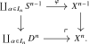
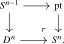
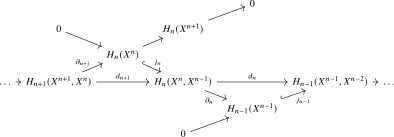
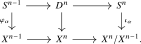
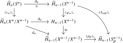

Ordinary homology and cohomology are the generalized theories singled out by the dimension axiom. In this chapter we use them axiomatically, postponing their intrinsic construction to Section 6.2. The online version continues with the cellular computation of ordinary homology from a CW-structure.
Theorem 3.3.1 (Existence of ordinary homology and cohomology). For every abelian group \(A\), there exist reduced homology and cohomology theories \[ \widetilde H_*(-;A)\colon \An _* \to \Ab ^{\Z } \qquadtext {and} \widetilde H^*(-;A)\colon \An _*\catop \to \Ab ^{\Z } \] satisfying the dimension axiom \[ \widetilde H_n(S^0;A) \cong \begin {cases} A & \text {if } n=0, \\ 0 & \text {if } n\neq 0, \end {cases} \qquadtext {and} \widetilde H^n(S^0;A) \cong \begin {cases} A & \text {if } n=0, \\ 0 & \text {if } n\neq 0. \end {cases} \] The associated unreduced theories are denoted \(H_*(-;A)\) and \(H^*(-;A)\). When \(A=\Z \), we usually omit it from the notation.
Remark 3.3.2 (Singular (co)homology). Given a topological space \(X\), one can write down an explicit chain complex of abelian groups \(C_*^{\mathrm {sing}}(X;\Z )\) called the singular chain complex of \(X\). The \(n\)-th term of this chain complex is given by \[ C_n^{\mathrm {sing}}(X;\Z ) := \Z [\Sing _n(X)], \] the free abelian group generated by the set \(\Sing _n(X) = \Hom _{\Top }(\abs {\Delta ^n}, X)\) of continuous maps from the geometric \(n\)-simplex to \(X\). The boundary map \(d_n\colon C_n^{\mathrm {sing}}(X;\Z ) \to C_{n-1}^{\mathrm {sing}}(X;\Z )\) sends a generating \(n\)-simplex \(\sigma \) to the alternating sum \(\sum _{i=0}^n (-1)^i d_i(\sigma )\) of its faces.
For an abelian group \(A\), tensoring with \(A\) and taking hom into \(A\) produces chain and cochain complexes \[ C_*^{\mathrm {sing}}(X;A) := C_*^{\mathrm {sing}}(X;\Z ) \otimes A \qquadtext {and} C^*_{\mathrm {sing}}(X;A) := \Hom _{\Ab }(C_*^{\mathrm {sing}}(X;\Z ),A). \] Their homology groups are the classical singular homology and cohomology groups of \(X\) with coefficients in \(A\). This is the traditional construction of ordinary (co)homology. The fact that this satisfies the axioms is non-trivial.
In this book, we will not take singular chains as the definition, because it depends on choosing a topological presentation of an anima. Instead, in Section 6.2 we will construct ordinary homology and cohomology intrinsically using the derived category \(\D (\Z )\). The comparison there shows that, for a topological space \(X\), the intrinsic ordinary (co)homology of the underlying anima \(\Pi _{\infty }(X)\) agrees with the singular (co)homology of \(X\).
Remark 3.3.3. The dimension axiom implies the usual values on spheres. Namely, since \(S^n \simeq \Sigma ^n S^0\) as pointed animae, the suspension isomorphism gives \[ \widetilde H_k(S^n;A) \cong \begin {cases} A & \text {if } k=n, \\ 0 & \text {if } k\neq n, \end {cases} \] and similarly for cohomology.
The next chapter organizes spectra and their morphisms into an \(\infty \)-category. Before turning to it, the online version continues with an optional cellular computation of ordinary homology, followed by a proof of Brown representability. Neither is needed later.
3.3.1 Cellular homology (online only)
Convention 3.3.4. Throughout this section, we write \(D^n\) for the \(n\)-disk and \(S^{n-1}\) for its boundary sphere, viewed as animae. While contractibility of the disk implies that \(D^n \simeq \pt \), this notation emphasizes the analogy to cell attachments in CW-complexes. Given a map \(f\colon A \to X\) of animae, we write \(X/A\) for the cofiber of \(A_+\to X_+\).
Definition 3.3.5 (CW-structure). A CW-structure on an anima \(X\) consists of a sequence of animae \[ \emptyset = X^{-2}=X^{-1} \to X^0 \to X^1 \to X^2 \to \cdots \] called the skeleta of \(X\), together with an equivalence \(X \simeq \colim _n X^n\), satisfying:
- (1)
-
The anima \(X^0\) is a set;
- (2)
-
For each \(n \geq 1\), there exists a set \(I_n\) of \(n\)-cells and a pushout square of animae

The map \(\phi \) is called the attaching map for the \(n\)-cells.
We say that \(X\) is finite-dimensional if there are no \(n\)-cells for sufficiently large \(n\), and finite if it has finitely many cells in total.
Remark 3.3.6 (Cellular approximation). We will freely use the cellular approximation theorem: every pointed map between pointed cell complexes is homotopic to a cellular one. Together with the comparison of classical and intrinsic homotopy groups in Remark 2.4.19, it has the following consequence for an anima \(X\) with a CW-structure, which is all we will need. The inclusion of the \(n\)-skeleton induces a map \[ [S^k,X^n]_* \to [S^k,X]_* \] that is a bijection for \(k < n\) and a surjection for \(k = n\); the same holds for the inclusion \(X^n \to X^m\) of skeleta with \(m > n\). More generally, if \(W\) is obtained from an anima \(Z\) by attaching cells of dimension \({}\geq m\), then \([S^k,Z]_* \to [S^k,W]_*\) is a bijection for \(k < m-1\) and a surjection for \(k = m-1\). Equivalently, every pointed map \(S^k \to W\) is homotopic to one factoring through \(Z\) once \(k \leq m-1\), and two such maps that become homotopic in \(W\) already become homotopic after attaching the cells of dimension \(m\).
Example 3.3.7. The results from Chapter 2 show: for a topological CW-complex \(X\) with skeleta \(X^n\), its underlying anima \(\Piinfty {X}\) obtains a CW-structure with skeleta \(\Piinfty {X^n}\).
Example 3.3.8. The \(n\)-sphere \(S^n\) admits a CW-structure with one \(0\)-cell and one \(n\)-cell: we have a pushout square

The key to cellular homology is understanding how homology changes as we pass from one skeleton to the next. Recall from Section 3.1 that the relative groups are defined by \(H_k(X,A):=\widetilde H_k(X/A)\) and fit into the long exact sequence of Exercise 3.1.4.
Lemma 3.3.9. Let \(X\) be an anima with a CW-structure. For all \(k, n \in \Z \) with \(n \geq 0\):
- (a)
-
The relative homology \(H_k(X^n, X^{n-1})\) is zero for \(k \neq n\) and is free abelian for \(k = n\), with one generator for each \(n\)-cell of \(X\).
- (b)
-
\(H_k(X^n) = 0\) for \(k > n\).
- (c)
-
The map \(H_k(X^n) \to H_k(X)\) induced by the structure map \(X^n \to X\) is an isomorphism for \(k < n\) and surjective for \(k = n\).
Proof. For part (a), the case \(n=0\) follows because \(X^0\) is a disjoint union of points. For \(n\geq 1\), the pushout square defining \(X^n\) from \(X^{n-1}\) shows that \[ X^n/X^{n-1} \;\simeq \; \bigvee _{\alpha \in I_n} D^n/S^{n-1} \;\simeq \; \bigvee _{\alpha \in I_n} S^n, \] a wedge of \(n\)-spheres indexed by the \(n\)-cells. Therefore \[ H_k(X^n, X^{n-1}) \;=\; \widetilde {H}_k\Big (\bigvee _{\alpha \in I_n} S^n\Big ) \;\cong \; \bigoplus _{\alpha \in I_n} \widetilde {H}_k(S^n) \;\cong \; \begin {cases} \bigoplus _{\alpha \in I_n} \Z & \text {if } k = n, \\ 0 & \text {if } k \neq n. \end {cases} \]
For part (b), the claim is clear for \(n = 0\): we have \(H_k(X^0) = 0\) for \(k > 0\) as \(X^0\) is a disjoint union of points, which have trivial homology. Consider now the long exact sequence of the pair \((X^n, X^{n-1})\): \[ H_{k+1}(X^n, X^{n-1}) \to H_k(X^{n-1}) \to H_k(X^n) \to H_k(X^n, X^{n-1}). \] By part (a), the first term vanishes when \(k \neq n - 1\) and the last term vanishes when \(k \neq n\). In particular, for \(k > n\) the map \(H_k(X^{n-1}) \to H_k(X^n)\) is an isomorphism and the claim follows by induction. For part (c), we may similarly use the long exact sequence of the pair \((X^{n+1},X^n)\) to conclude that the map \(H_k(X^n) \to H_k(X^{n+1})\) is surjective for \(k \leq n\) and injective (hence an isomorphism) for \(k < n\).
It remains to pass from the skeleta to their colimit. Adding a disjoint basepoint commutes with colimits. Apply the pushout presentation of Lemma 2.4.29 to the sequence \((X^r)_+\). Since the resulting square is a pushout, the cofiber of its top horizontal map is isomorphic to the cofiber of its bottom horizontal map. Comparing the corresponding long exact sequences gives the Mayer–Vietoris sequence of the pushout. By the wedge axiom, and after multiplying the odd source summands by \(-1\), the relevant portion is \[ \bigoplus _{r\geq 0}H_k(X^r) \xrightarrow {\delta _k} \bigoplus _{r\geq 0}H_k(X^r) \longrightarrow H_k(X) \longrightarrow \bigoplus _{r\geq 0}H_{k-1}(X^r) \xrightarrow {\delta _{k-1}} \bigoplus _{r\geq 0}H_{k-1}(X^r). \] Writing \(\iota _r\) for the inclusion of the \(r\)-th summand, the first map is given by \[ \delta _k(\iota _r(x))=\iota _r(x)-\iota _{r+1}((X^r\to X^{r+1})_*(x)). \] The map \(\delta _k\) is injective: if an element of the direct sum lies in its kernel, its components vanish successively, starting with the zeroth component. Its cokernel is the algebraic colimit \(\colim _rH_k(X^r)\). The same injectivity statement for \(\delta _{k-1}\) therefore identifies the middle map with an isomorphism \(\colim _rH_k(X^r)\iso H_k(X)\). The claim now follows from the stabilization properties established above. □
We now construct the cellular chain complex.
Construction 3.3.10 (Cellular chain complex). Let \(X\) be an anima with a CW-structure. Using Lemma 3.3.9, portions of the long exact sequences for the pairs \((X^{n+1}, X^n)\), \((X^n, X^{n-1})\), and \((X^{n-1}, X^{n-2})\) fit into the following commutative diagram:

Here the maps \(j_n\) and \(\partial _n\) come from the long exact sequence of the pair \((X^n, X^{n-1})\). Since \(H_n(X^{n-1}) = 0\) by Lemma 3.3.9(b), the map \(j_n\) is injective for every \(n\). We define the cellular boundary maps as the compositions \[ d_n \;:=\; j_{n-1} \circ \partial _n \colon H_n(X^n, X^{n-1}) \to H_{n-1}(X^{n-1}, X^{n-2}). \] Since \(\partial _n \circ j_n = 0\) (as these are consecutive maps in an exact sequence), we have \(d_n \circ d_{n+1} = 0\). Thus the groups \[ C_n^{\mathrm {CW}}(X) := H_n(X^n, X^{n-1}) \] with differentials \(d_n\) form a chain complex, called the cellular chain complex of \(X\).
By Lemma 3.3.9(a), the cellular chain group \(C_n^{\mathrm {CW}}(X)\) is a free abelian group with one generator for each \(n\)-cell of \(X\). We write \(e^n_{\alpha } \in C_n^{\mathrm {CW}}(X)\) for the generator corresponding to the \(n\)-cell indexed by \(\alpha \in I_n\).
Definition 3.3.11 (Cellular homology). The cellular homology groups of an anima \(X\) with CW-structure are the homology groups of the cellular chain complex: \[ H_n^{\mathrm {CW}}(X) \;:=\; H_n(C_*^{\mathrm {CW}}(X)) \;=\; \ker (d_n) / \im (d_{n+1}). \]
The main theorem of this section is that cellular homology agrees with ordinary homology:
Theorem 3.3.12. For any anima \(X\) with a CW-structure and any \(n \geq 0\), there is an isomorphism \[ H_n^{\mathrm {CW}}(X) \;\cong \; H_n(X). \]
Proof. By Lemma 3.3.9(c), the map \(H_n(X^{n+1}) \to H_n(X)\) is an isomorphism. Combining this with the previous commutative diagram, we conclude that \(H_n(X)\) is isomorphic to the cokernel of the map \(\partial _{n+1}\colon H_{n+1}(X^{n+1}, X^n) \to H_n(X^n)\). By injectivity of \(j_n\), the target \(H_n(X^n)\) of this map may be identified with the kernel of \(\partial _n\colon H_n(X^n,X^{n-1}) \to H_{n-1}(X^{n-1})\), which in turn may be identified with \(\ker (d_n)\) because of the injectivity of \(j_{n-1}\). Under the resulting isomorphism \(j_n\colon H_n(X^n) \xrightarrow {\cong } \ker (d_n)\), the image of \(\partial _{n+1}\) gets mapped to the image of \(d_{n+1} = j_n\partial _{n+1}\), and we conclude that \[ H_n(X) \; \cong \; \ker (d_n)/\im (d_{n+1}) \; = \; H^{\mathrm {CW}}_n(X). \qedhere \] □
We leave the following easy consequences to the reader:
Exercise 3.3.13. Let \(X\) be an anima with a CW-structure.
- (1)
-
If \(X\) has no \(n\)-cells, then \(H_n(X) = 0\).
- (2)
-
If \(X\) has \(k\) cells in dimension \(n\), then \(H_n(X)\) is generated by at most \(k\) elements.
- (3)
-
If \(X\) has no two cells in adjacent dimensions, then \(H_n(X)\) is free abelian with rank equal to the number of \(n\)-cells.
Example 3.3.14. Complex projective space \(\CP ^n\) has a filtration whose successive strata are the affine cells \(\C ^0,\C ^1,\ldots ,\C ^n\), and hence a CW-structure with one cell in each even dimension \(0, 2, 4, \ldots , 2n\). Since no two cells are in adjacent dimensions, Exercise 3.3.13(3) gives \[ H_k(\CP ^n) \;\cong \; \begin {cases} \Z & \text {if } k = 0, 2, 4, \ldots , 2n, \\ 0 & \text {otherwise.} \end {cases} \]
Example 3.3.15. For \(n, m \geq 1\) with \(n \neq m\), the product \(S^n \times S^m\) has a CW-structure with one \(0\)-cell, one \(n\)-cell, one \(m\)-cell, and one \((n+m)\)-cell. If \(n,m\geq 2\) and \(|n-m|>1\), then no two cells are in adjacent dimensions, so \[ H_k(S^n \times S^m) \;\cong \; \begin {cases} \Z & \text {if } k = 0, n, m, \text { or } n+m, \\ 0 & \text {otherwise.} \end {cases} \] In the remaining cases, some cells lie in adjacent dimensions, but the corresponding cellular boundary maps are zero, giving the same answer.
To perform explicit computations, we need a formula for the cellular boundary maps in terms of the attaching maps of the cells. The formula involves the degree of maps between spheres.
Remark 3.3.16 (Degree). For every \(n\geq 1\), a map \(f\colon S^n\to S^n\) induces multiplication by a unique integer on \(H_n(S^n)\cong \Z \). This integer is called the degree of \(f\). For pointed maps, this agrees with the degree recorded in Remark 2.4.20.
Proposition 3.3.17 (Cellular boundary formula). Let \(X\) be an anima with a CW-structure, and let \(n \geq 2\). Then the cellular boundary map is given at the generator \(e^n_{\alpha }\) by \[ d_n(e^n_{\alpha }) \;=\; \sum _{\beta \in I_{n-1}} d_{\alpha \beta } \cdot e^{n-1}_{\beta }, \] where the sum is over the set \((n-1)\)-cells, and \(d_{\alpha \beta }\) is the degree of the composite map \[ \Delta _{\alpha \beta }\colon S^{n-1} \xrightarrow {\phi _{\alpha }} X^{n-1} \xrightarrow {q} X^{n-1}/X^{n-2} \simeq \bigvee _{\gamma \in I_{n-1}} S^{n-1}_{\gamma } \xrightarrow {p_{\beta }} S^{n-1}_{\beta }. \] Here \(q\) is the quotient map and \(p_{\beta }\) is the projection onto the \(\beta \)-th wedge summand.
Note that \(d_{\alpha \beta }\) is non-zero only for finitely many \(\beta \), since by compactness of \(S^{n-1}\) the map from \(S^{n-1}\) to the wedge \(\bigvee _{\gamma } S^{n-1}_{\gamma }\) only hits finitely many wedge summands.
Proof. Recall that \(d_n\) is the composite \[ \widetilde H_n(X^n/X^{n-1}) \xrightarrow {\partial _n} H_{n-1}(X^{n-1}) \xhookrightarrow {j_{n-1}} \widetilde H_{n-1}(X^{n-1}/X^{n-2}), \] where \(\partial _n\) is the connecting homomorphism and \(j_{n-1} = q_*\) is induced by the quotient map \(q\). Let \[ \iota _{\alpha }\colon S^n \; \hookrightarrow \; \bigvee _{\gamma \in I_n} S^n_{\gamma } \; \cong \; X^n/X^{n-1} \] be the inclusion of the \(\alpha \)-th wedge summand. The generator \(e^n_{\alpha } \in \widetilde {H}_n(X^n/X^{n-1})\) is the image of the generator \([\iota _n] \in \widetilde {H}_n(S^n)\) under the map on homology induced by \(\iota _{\alpha }\). The map \(\iota _{\alpha }\) may alternatively be obtained from the attaching map \(\phi _{\alpha }\colon S^{n-1} \to X^{n-1}\) by passing to cofibers in the following diagram:

By the naturality of the boundary map, it follows that the top square in the following diagram commutes:

It follows that the image under \(d_n\) of the generator \(e^n_{\alpha }\) is the same as the image of \([\iota _{n-1}] \in \widetilde {H}_{n-1}(S^{n-1})\) of the middle vertical map. Under the isomorphism \(\widetilde {H}_{n-1}(X^{n-1}/ X^{n-2}) \cong \bigoplus _{\gamma \in I_{n-1}} \widetilde {H}_{n-1}(S^{n-1}_{\gamma })\), the \(\beta \)-th component is obtained by applying the projection \((p_{\beta })_*\). We conclude that \(d_{\alpha \beta }\) is the coefficient of the map \((p_{\beta } \circ q \circ \phi _{\alpha })_* = (\Delta _{\alpha \beta })_*\colon H_{n-1}(S^{n-1}) \to H_{n-1}(S^{n-1})\). By Remark 3.3.16, this is \(\deg (\Delta _{\alpha \beta })\). □
For \(n=1\), the boundary of a \(1\)-cell is the difference of the classes of its two endpoints. This follows directly from the connecting homomorphism for the pair \((X^1,X^0)\). In particular, this boundary vanishes when \(X^0\) consists of a single point.
Example 3.3.18 (Orientable surfaces). Let \(M_g\) be the closed orientable surface of genus \(g\). It admits a CW-structure with one \(0\)-cell, \(2g\) one-cells \(a_1, b_1, \ldots , a_g, b_g\), and one \(2\)-cell attached along the word \([a_1, b_1] \cdots [a_g, b_g] = a_1 b_1 a_1^{-1} b_1^{-1} \cdots a_g b_g a_g^{-1} b_g^{-1}\). The cellular chain complex is \[ 0 \to \Z \xrightarrow {d_2} \Z ^{2g} \xrightarrow {d_1} \Z \to 0. \] The boundary \(d_1\) is zero because each one-cell starts and ends at the unique zero-cell. For \(d_2\), each generator \(a_i\) appears in the attaching word with total exponent \(1 + (-1) = 0\), and similarly for \(b_i\). Thus each map \(\Delta _{\alpha \beta }\) has degree zero, giving \(d_2 = 0\). Since both boundary maps vanish, we obtain \(H_0(M_g) \cong \Z \), \(H_1(M_g) \cong \Z ^{2g}\), and \(H_2(M_g) \cong \Z \).
Example 3.3.19 (Non-orientable surfaces). Let \(N_g\) be the closed non-orientable surface of genus \(g\) (the connected sum of \(g\) copies of \(\RP ^2\)). It admits a CW-structure with one \(0\)-cell, \(g\) one-cells \(a_1, \ldots , a_g\), and one \(2\)-cell attached along the word \(a_1^2 a_2^2 \cdots a_g^2\). The cellular chain complex is \[ 0 \to \Z \xrightarrow {d_2} \Z ^{g} \xrightarrow {d_1} \Z \to 0. \] Again \(d_1 = 0\), since each one-cell starts and ends at the unique zero-cell. For \(d_2\), each \(a_i\) appears with total exponent \(2\), so the degree of each \(\Delta _{\alpha \beta }\) equals \(2\). Thus \(d_2(1) = (2, 2, \ldots , 2) \in \Z ^g\). Since \(d_2\) is injective, \(H_2(N_g) = 0\). To compute \(H_1(N_g) = \ker (d_1)/\im (d_2) = \Z ^g / \langle (2, \ldots , 2) \rangle \), we change basis: replacing the last standard basis vector \((0, \ldots , 0, 1)\) by \((1, \ldots , 1)\), we see that \(H_1(N_g) \cong \Z ^{g-1} \oplus \Z /2\Z \).
Example 3.3.20 (Real projective space). Real projective space \(\RP ^n\) has a CW-structure with one cell in each dimension \(0, 1, \ldots , n\). The attaching map \(\phi _k\colon S^{k-1} \to \RP ^{k-1}\) for the \(k\)-cell is the quotient map identifying antipodal points. One may compute using geometric methods that the composite \(\Delta \colon S^{k-1} \xrightarrow {\phi _k} \RP ^{k-1} \to \RP ^{k-1}/\RP ^{k-2} \simeq S^{k-1}\) has degree \(1 + (-1)^k\): the two preimages of a generic point contribute with the same sign when \(k\) is even and opposite signs when \(k\) is odd. Thus the cellular boundary maps are \[ d_k \;=\; \begin {cases} 0 & \text {if } k \text { is odd}, \\ 2 & \text {if } k \text { is even}. \end {cases} \] This gives \[ H_k(\RP ^n) \;\cong \; \begin {cases} \Z & \text {if } k = 0, \\ \Z /2\Z & \text {if } 0 < k < n \text { and } k \text { is odd}, \\ \Z & \text {if } k = n \text { and } n \text { is odd}, \\ 0 & \text {otherwise}. \end {cases} \]
Generated from the authoritative LaTeX source.